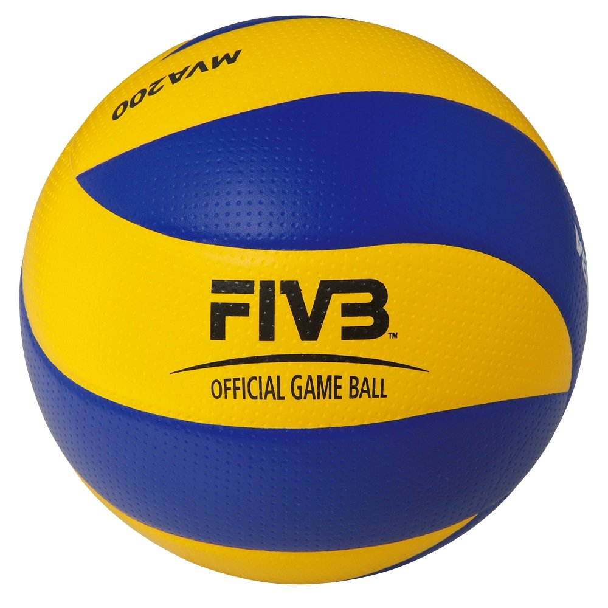
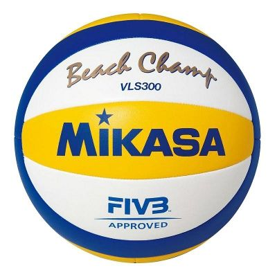

Volejbola bumbas, izmanto, lai spēlētu telpu volejbolu vai pludmales volejbolu.
Volejbola pasaules kausos iekštelpās parasti izmanto bumbu "Mikasa MVA200", šī bumba ir apstiprināta no FIVB jeb no starptautiskās volejbola federācijas. Šī bumba ir ļoti novērtēta profesionālajos volejbola līmeņos, jo tā nodrošina labu kontrolējamību, stabilitāti un lidojuma precizitāti. Mikasa MVA200 ir izgatavota no īpaši izturīga materiāla un ir paredzēta ilgstošai lietošanai profesionālās sacensībās.
Īpaši populārs un plaši izmantots modeļs pludmales volejbolā ir Mikasa VLS300. Šī bumba ir īpaši izstrādāta, lai nodrošinātu labu lidojuma precizitāti un kontroli, kā arī lai izturētu pludmales apstākļus, piemēram, smilšu un saules iedarbību. Mikasa VLS300 ir atzīta arī par oficiālo bumbu FIVB Pasaules tūrē un citas starptautiskas pludmales volejbola sacensības.
